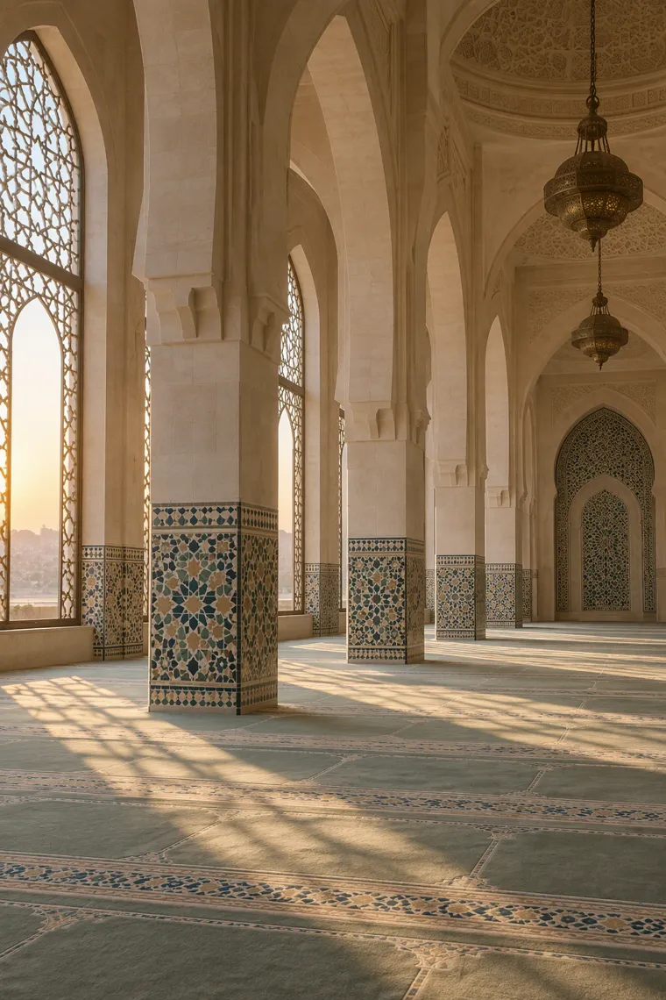
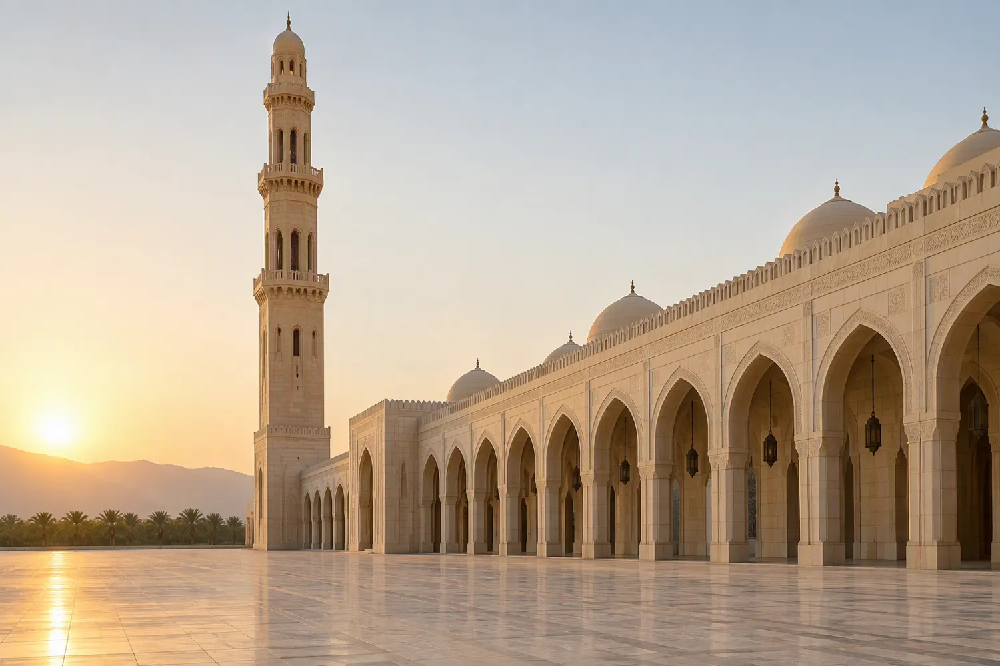
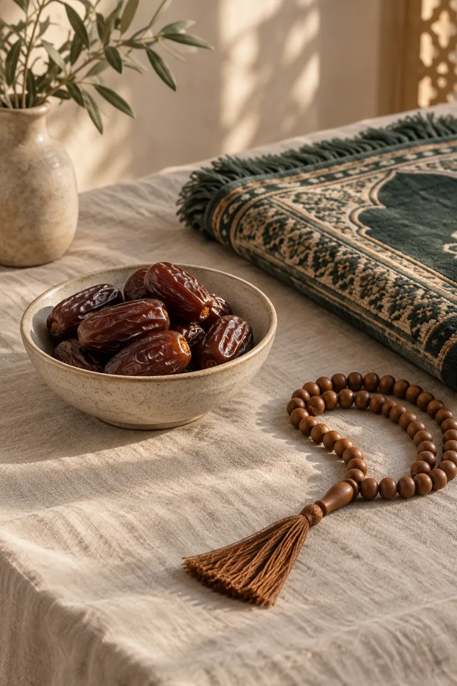
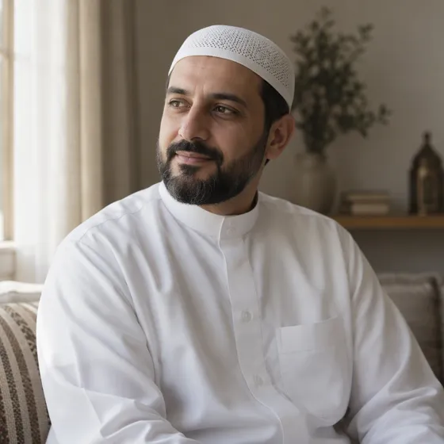
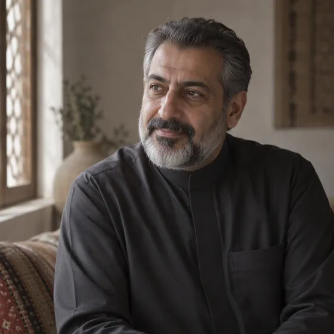
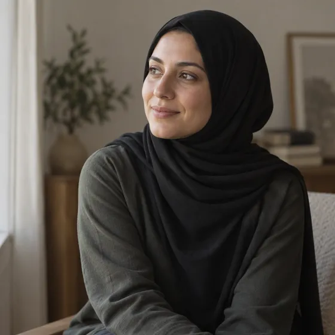

EssentialUmrah Essential
Makkah and Madinah
12 days, 11 nights · departures monthly
Group of 24 · hotel 600m from the Haram
fromRM7,900
See datesLed by a mutawwif · visa and documents handled

Umrah from Malaysia
Scholar-led groups, hotels within walking distance of the Haram, and every detail of the journey arranged before you leave.
See packagesSafar arranges Umrah for Malaysian families, first-time pilgrims and returning groups, with Islamic travel built into the package rather than added on: prayer facilities, halal meals, ziarah visits and a guide with you at every step.
Prayer rooms on every leg, stops timed around salah, and a guide who knows the prayer facilities at each airport.
All meals halal, with vegetarian and diabetic options arranged in advance.
A qualified mutawwif with each group, covering the rites, the etiquettes and the questions people are shy to ask.
Separate departures for sisters, with a female guide and women-only accommodation floors.
Scheduled visits in Makkah and Madinah, with the history explained rather than recited.
Wheelchairs on request, ground-floor rooms, and a guide assigned to assist those who need it.

EssentialMakkah and Madinah
12 days, 11 nights · departures monthly
Group of 24 · hotel 600m from the Haram
fromRM7,900
See datesLed by a mutawwif · visa and documents handled

FamilyMakkah and Madinah
14 days, 13 nights · school holiday departures
Apartments · up to 12 families
fromRM11,500
See datesChild-friendly pacing · connecting rooms
Makkah, with Madinah extension
10 nights · last ten nights of Ramadan
Group of 18 · iftar and sahur arranged
fromRM14,900
See datesBooked out two years running
Tell us who is travelling, when, and whether anyone needs wheelchair or elderly support.
We show the walking distance to the Haram for each option, in metres, before you decide.
Visa, vaccinations and travel documents handled by us. You get a checklist, not a surprise.
One guide from the airport to the return flight, and reachable on the ground throughout.

Mutawwif
Walks first-time pilgrims through the rites step by step, in Malay and English, without assuming anyone already knows.

Scholar-led guidance
Covers the fiqh of Umrah and the etiquettes of the two holy cities, and answers the questions people are shy to ask.

Women's group guide
Leads the sisters' departures, with women-only accommodation floors and a female guide available at every hour of the day.